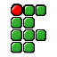

- W ASD Mover: W/S avançam; A/D deslocam lateralmente
- CtrlouMouse 1Atirar / confirmar
- EspaçoUsar item / abrir porta
- EnterConfirmar menu
- EscMenu do jogo

HUB ARQUIVOS IFBA
SUBSISTEMA EXPERIMENTAL
- Documento solicitado
- DOOM
- Tipo
- Executável não acadêmico
- Status
- Definitivamente não é um PDF
A execução ocorrerá em uma sessão temporária. Clique no jogo para autorizar a captura do teclado.
Subsistema experimental
DOOM clássico
O teclado permanece livre até você clicar na área do jogo.
Preparando DOOM clássico…
Procurando o melhor motor disponível.
Sessão do DOOM recuperada.
Controle touch aguardando o emulador.
Relatório de produtividade
Sessão encerrada.
Tempo de procrastinação: 00:00.
Nenhum documento acadêmico foi consultado nesse período.